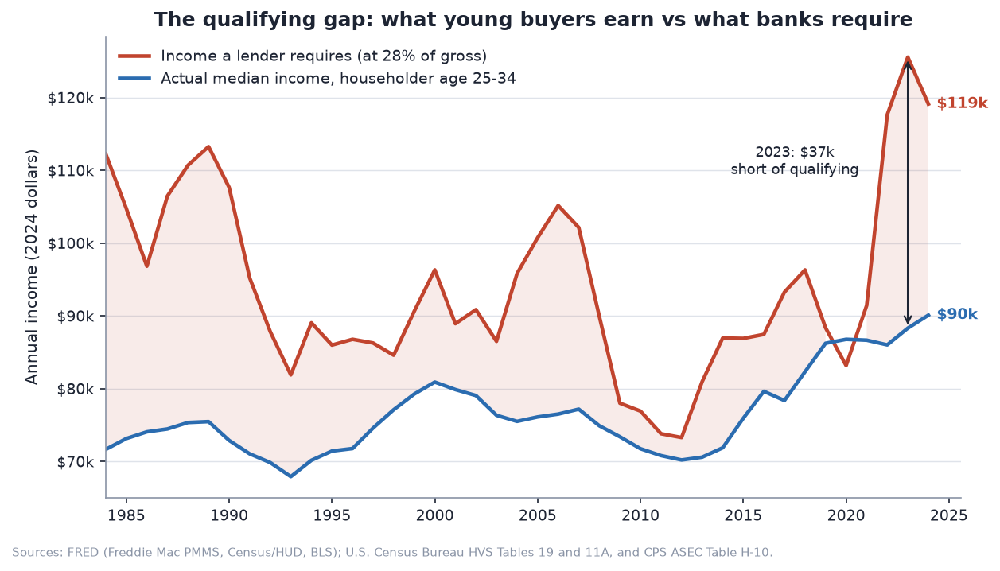
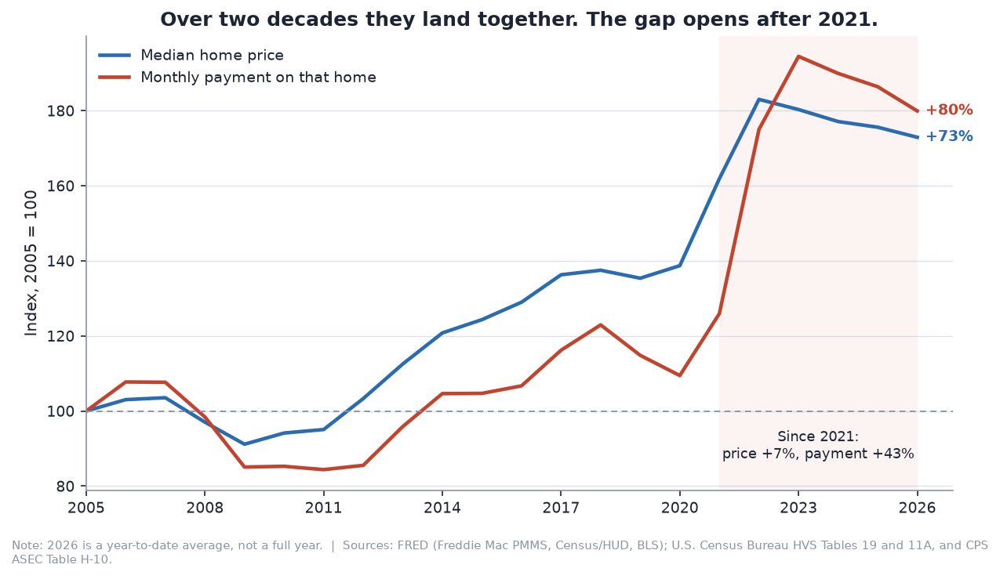
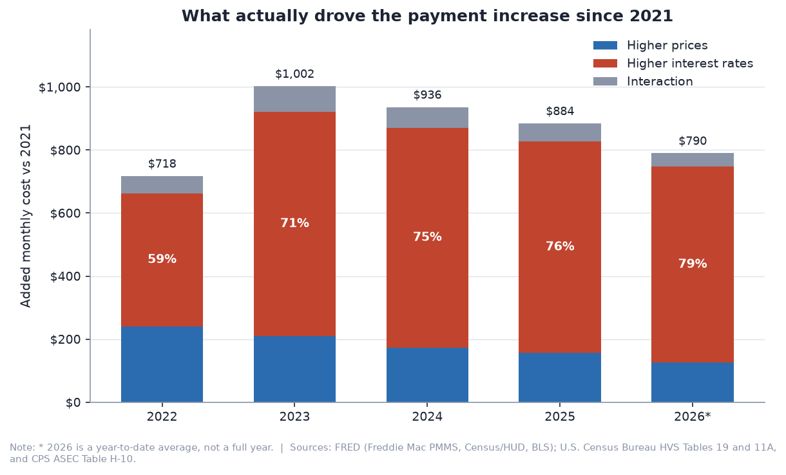
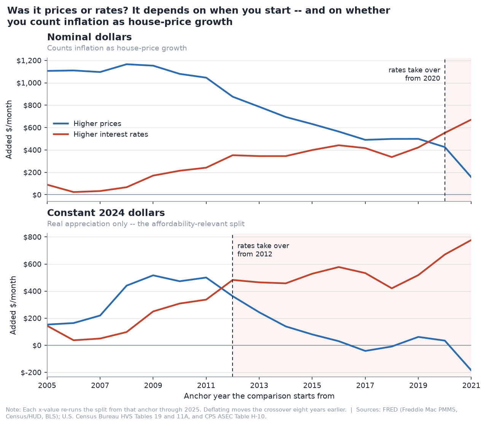
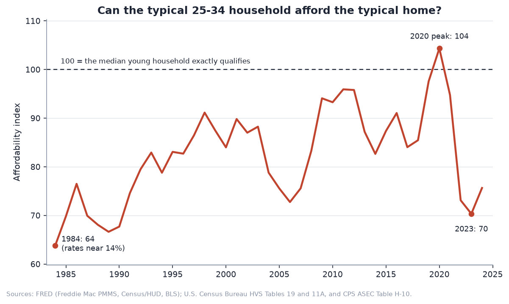
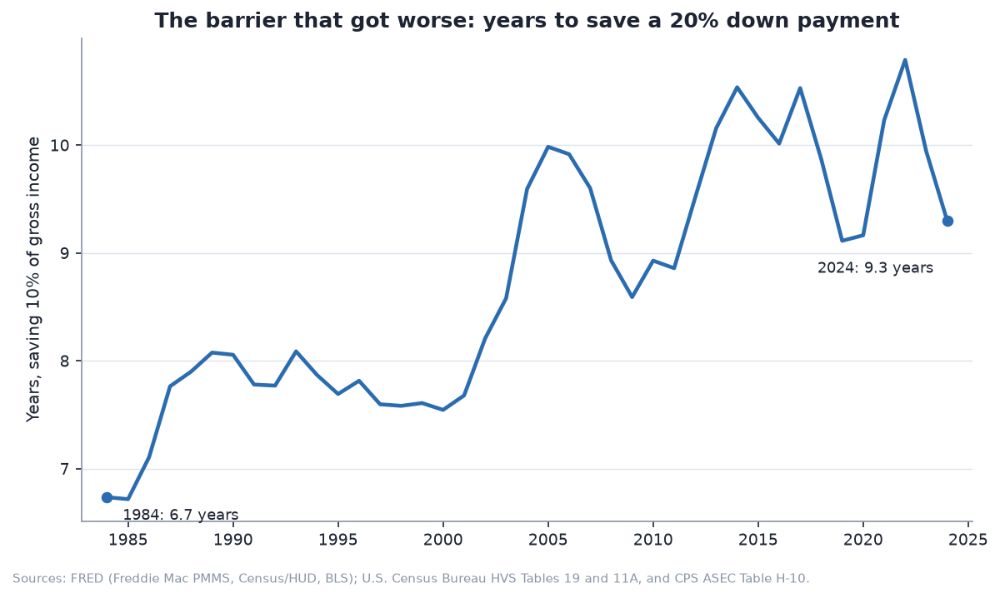
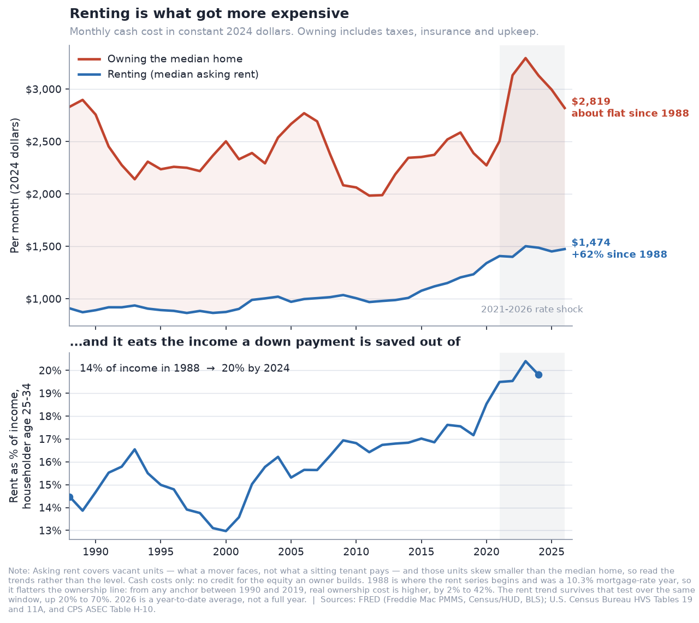
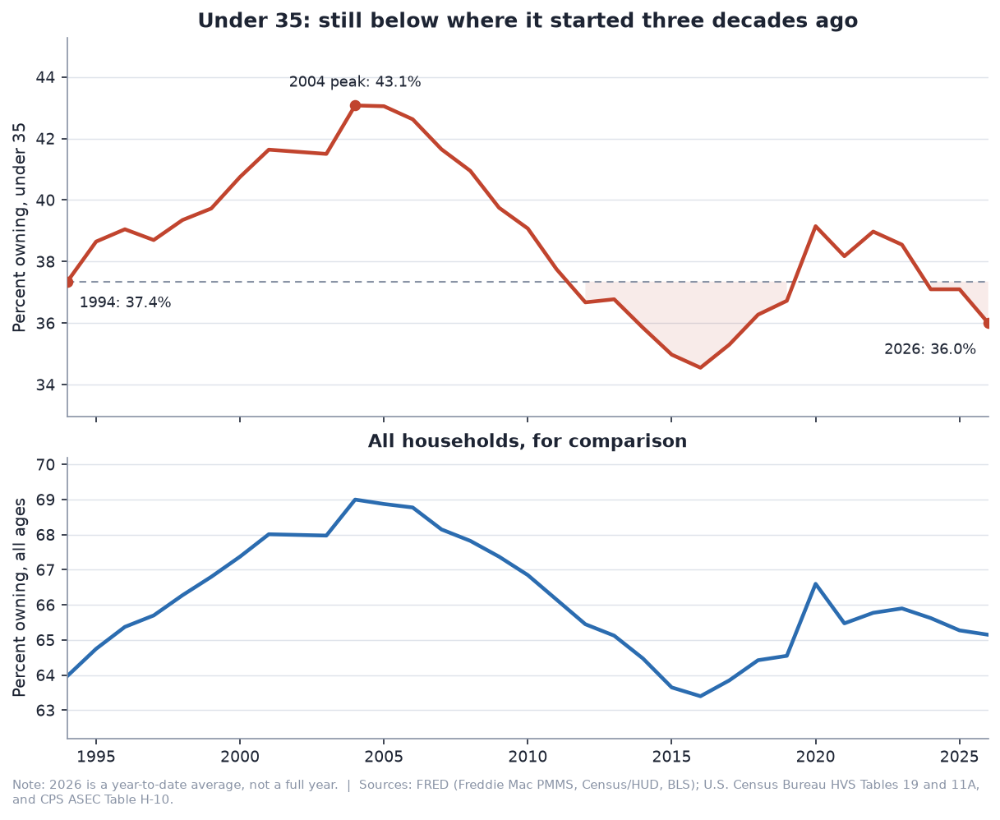

Charts can't load from file://.
The interactive section fetches JSON, which browsers block on local files.
Serve the repo instead:
python3 -m http.server 8000 from the project root, then open
http://localhost:8000/web/. The story figures below are images and
will display either way.
AIPI-510 · Sourcing Data for Analytics · Module Project 1
Everyone knows houses got expensive. That explanation is incomplete.
A buyer never actually pays a price — they pay a monthly payment, and
they have to pass a lender's income test to get it. Both depend on the price
and the interest rate together. Model the payment instead of the
sticker price and the recent history of American housing looks very different —
and then look past the shock, and it changes again.
+11%Median home price, 2021 → 2023
+54%Monthly payment on that same home
+62%Real cost of renting since 1988, while the monthly cost of owning went sideways
That is the shock. Underneath it runs a slower one: rent rose 62% in real terms,
eating the very income a deposit has to be saved out of — and unlike most long-run
claims in this project, that one survives a change of starting year.
Start with the qualifying gap, or jump straight to
the figure that stress-tests our own thesis.
Natalie Zachariah & Haydn Stucker · Duke University, Fall 2026
The story, in eight figures
Every figure below is generated by src/eda.py from data downloaded
programmatically from FRED and the U.S. Census Bureau. Nothing is hand-edited,
and every number is reproduced by running python src/run_all.py.
1 The qualifying gap
Start with what a bank demands. Invert the 28% front-end debt-to-income rule and
you get the income needed to qualify for the median home. Set that against what
households headed by a 25–34 year old actually earn, and the two lines come apart
exactly when rates move.

2 Price and payment land in the same place
It is tempting to show price and payment diverging permanently — but that depends
entirely on where you start the index. Over the full twenty years they end up
within a few points of each other. What is real is the split that opens
after 2021, so the chart shows the whole window and shades the shock
rather than picking the base year that flatters the claim.

3 What drove the jump
Hold the price at its 2021 level and let the rate move, then do the reverse. The
two effects don't sum to the total — the payment is multiplicative in price and
non-linear in rate — so the leftover interaction term is shown explicitly
instead of being quietly assigned to one factor.

4 But it depends on when you start — and on inflation
This is the figure we would most want a sceptical reader to check. 2021 was the
all-time low in mortgage rates, which is the anchor most favourable to a
rates-driven story. So we re-ran the identical decomposition from
every anchor across twenty years, in both nominal and constant
dollars.
The result does not weaken the claim — it sharpens it. In constant dollars,
rising rates are the larger factor from any anchor back to 2012.
Run it in nominal dollars and you get the opposite answer for every anchor before
2020, because CPI rose 60% across the window and a nominal split hands prices the
credit for inflation. The two crossovers sit eight years apart.

Real prices actually fell between 2021 and 2025, which is why the price
effect turns negative at the right edge of the lower panel. Percentage shares stop
being readable once the two effects point in opposite directions, so this figure
plots dollars rather than shares.
5 Could the typical young household ever afford it?
An index of 100 means the median 25–34 household earns exactly enough to qualify
for the median home. It has been under 100 for most of forty years. We report the
inconvenient comparison too: on the monthly-payment test, the early 1980s were
worse than today.

6 The barrier that did get worse
The payment test flatters the present. The down-payment test does not. Saving 20%
of the median home at a 10% savings rate took under seven years of income in 1984
and takes over nine now — the hurdle a payment-based measure misses entirely.

7 Renting is what actually got more expensive
The obvious question about all of the above: compared to what? Our
audience is renting right now. So we priced the alternative — and it reframes the
whole story.
In constant dollars, the monthly cost of owning the median home is about where it
was in 1988. Renting rose 62% over the same span. Owning has
always cost more per month than renting — 3.1× in 1988, 1.9× today — so the
barrier was never the monthly carry. It was getting in the door, and rent is what
made that harder: it now takes 20% of a young household's income,
up from 14%, out of the very same income a deposit has to be saved from.

The same test, turned on ourselves. 1988 is where the Census rent
series begins, so we didn't pick it — but it was a 10.3% mortgage-rate year, the
86th percentile of the whole series, and it flatters the ownership line. From any
anchor between 1990 and 2019, real ownership cost is higher, by 2% to
42%. Rent passes the same test over the same window — up 20% to 70% from every
one of those anchors. (We stop at 2019: an anchor a year or two from the endpoint
measures noise, not a trend.) So "owning is flat" means "owning costs what it did
in the high-rate era" — and the rent trend is the robust half.
Read trends, not levels. Census reports asking rent on vacant units — the
right series for someone about to move, but those units skew smaller than the
median owned home. And this is cash cost only: it credits an owner nothing for the
equity they build, and charges a renter nothing for having none.
8 The outcome
All of it lands in one number. The homeownership rate for households under 35 is
still below where it stood three decades ago, and well off its 2004 peak.

Explore the source data
Every series the project downloads, including the ones that provide background
rather than feeding a headline. Each chart shows a single series against its own
axis — mixing series of different units on one scale is the fastest way to make a
chart lie.
Limitations, bias & ethical considerations
The short version: this models one specific buyer, and that buyer is a construct.
Read these figures as an index of pressure over time, not a prediction for any
person.
This models one buyer, and they don't exist
Every figure assumes a conventional 30-year fixed mortgage, 20% down, at the
national median price, judged against a 28% front-end DTI. Real buyers use FHA
loans with 3.5% down, get help from family, buy below the median, or stretch
past 28%. The national median home does not exist anywhere — housing markets
are local, and one national series hides enormous variation between Austin and
Cleveland.
Group averages erase the largest disparities
We analyse young households as one block. Homeownership rates differ enormously
by race, and the Black–white homeownership gap is wider today than it was when
housing discrimination was legal. Down-payment ability in particular is
inherited — it reflects whether a family already owned. An age-only cut
is silent on the deepest inequity in American housing.
The framing is a choice, and it drives the headline
Measuring affordability by the monthly payment is defensible, but it is a
choice. By that measure the early 1980s were worse than today — we
report this rather than omitting an inconvenient comparison. Measuring by the
down payment, or by price-to-income, points the other way. Figure 4 exists
because the base year of a decomposition moves the answer more than any
modelling assumption in the project.
The rent comparison is softer than it looks
Census reports asking rent on vacant units — what a mover faces, which
is the right series for someone deciding whether to buy, but not what a sitting
tenant pays. Those units also skew smaller than the median owned home, so we are
not comparing like with like on size. The 62% real growth figure survives that
mismatch; the 1.9× level ratio is more fragile. Cash costs only, throughout.
Medians conceal distribution
A median income paired with a median price tells you nothing about who is
actually buying. If the buyer pool shifts toward wealthier households, medians
can look stable while access narrows sharply underneath. Our data cannot see
that.
The two cohorts are not the same people
Income comes from CPS Table H-10 for householders aged 25–34;
the homeownership rate comes from HVS Table 19 for householders
under 35, which includes everyone below 25. They are close
enough to narrate together and are not interchangeable — we never divide one by
the other. Separately, "young households out-earn all households" is partly
composition: a 25–34 household is likelier to hold two earners than the all-ages
median, which includes single retirees.
Survey error, two inflation measures, partial years
Census CPS and HVS estimates carry sampling error, and CPS income questions
changed methodology in 2013 and 2017 (we keep the revised estimate). We deflate
with CPI-U while Census uses CPI-U-RS, so the affordability ratio is computed
entirely in nominal dollars and real values appear only for display. Market data
runs through August 2026, so 2026 is a year-to-date average — flagged with an
asterisk in figures and an is_partial_year column in the data.
This is decomposition, not causal inference
We show that rates and prices account for the payment increase
arithmetically. We do not claim to identify why rates rose, and nothing here is
financial advice.
Sources
Federal Reserve Economic Data (FRED)
Eighteen series retrieved programmatically from
fred.stlouisfed.org/graph/fredgraph.csv, covering mortgage rates
and home prices (Freddie Mac PMMS, Census/HUD, Case-Shiller), rents (CPI rent of
primary residence), the macro backdrop (GDP, CPI-U, unemployment, Treasury
yields, population) and household balance sheets (median income, student loans,
revolving credit).
Federal Reserve Bank of St. Louis, FRED Economic Data.
fred.stlouisfed.org
(retrieved August 2026).
U.S. Census Bureau
HVS Table 19 — homeownership rates by age of householder,
1994–2026, quarterly. HVS Table 11A — median asking rent for
the U.S. and regions, 1988–2026, quarterly. CPS ASEC Table H-10
— households by median income and age of householder, 1967–2024, annual. All
three are parsed directly from the published workbooks by
src/clean.py, which is most of the awkward code in this project:
they are display tables built for humans, and Table 11 puts two different tables
on one sheet.
U.S. Census Bureau, Housing Vacancies and Homeownership (CPS/HVS),
Tables 19 and 11A; Current Population Survey, Annual Social and Economic
Supplement, Table H-10.
Selected reading
Mian & Sufi (2018) — housing, credit availability and the business cycle
Every figure and number on this page is rebuilt from primary federal sources by
one command. Nothing is hand-edited. Raw downloads are resumable, so an
interrupted run costs nothing.
The README there documents every series and its citation, the engineered
features, each modelling assumption, and the limitations in full — including
the base-year tests we ran on our own conclusions. Figures land in
figures/, cleaned panels in data/processed/, and this
page's JSON in web/data/.